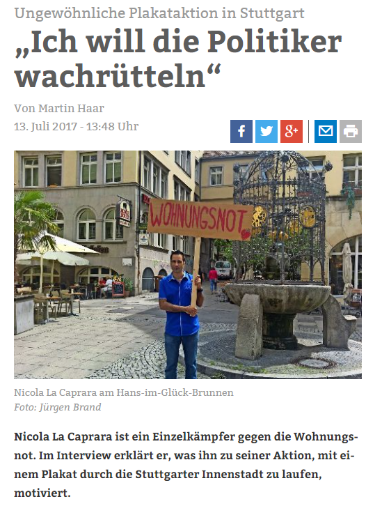

Make Things Better
Love Is The Engine
Über mich
Ich habe einen Traum: Dass die Würde und individuelle Entfaltungsmöglichkeit des Einzelnen das höchste Gut auf Erden sein wird. Ich bin zu 100% open mindet!
Links, Rechts, und alle anderen oberflächlichen Begriffe passen zu mir nicht. Bin hochsensibel, sehr feinfühlig und deshalb auch sehr zurückgezogen.
Wichtige Sachen versuche ich aus der 360grad Perspektive zu analysieren. Und wenn ich denke, das Unrecht sei zu groß, gehe ich manchmal auch alleine dagegen an.
Hier ein Interview der Stuttgarter Zeitung über mich:

Aufgrund meines ganz speziellen, einzigartigen Charakters, habe ich schon als kleines Kind enorme Schwierigkeiten
in dieser Welt gehabt. Deshalb war und bin ich eigentlich auch sehr zurückgezogen.
Da ich doch aufgrund meines natürlichen Verlangen nach Verpflegung, einer Bleibe und andere Grundbedürfnisse gezwungen war
mit der Außenwelt zu interagieren, lernte ich sehr früh auf was für Probleme man stoßen kann. Und das Problem der immer schlimmer werdenden Wohnungsnot,
ist meines Erachtens
ein absolutes No-Go und ein erschreckender Ausdruck für die große Herzlosigkeit dieser Gesellschlaft. Man denkt, dass nur faule, oder drogensüchtige Menschen
in Wohnungsnot geraten.
Das ist jedoch komplett falsch. Ich zum Beispiel bin sehr fleißig, kann 10Std am Stück sogar am Fließband durcharbeiten und bin über Jahre hinweg nie krank.
Das kann ich alles auch beweisen! Trotzdem habe ich und hatte ich vor allem in meiner Jugend enorme Schwierigkeiten in der Arbeitswelt.
Die Gründe wieso man in dieser Gesellschlaft obdachlos wird sind vielseitig. Ich habe mit vielen Obdachlosen gesprochen
und ein Drittel der Obdachlosen scheinen Menschen zu sein, die auch wie ich überhaupt nicht faul oder drogensüchtig sind. Aber abgesehen davon,
niemand, absolut niemand darf obdachlos werden, außer derjenige will es selbst.
Ein aktuelles Beispiel über mich, Stand 03.2024:
Weil ich nicht weiß, ob ich arbeitslos werde, weiß ich wiederum nicht, ob ich im Großraum Stuttgart nach der Arbeitslosigkeit wieder Arbeit finden werde.
Mein aktueller Arbeitgeber ist in der Krise. Und aus Erfahrung tue ich mich sehr schwer wieder Arbeit zu finden. Besonders dann wenn die Wirtschaft gerade
abgebaut wird, ist es für Menschen wie mich umso schwerer!
Wenn ich dann die Problematik weiter denke, kann es auch gut sein, dass ich dann im Bürgergeldbereich lande.
Dann hätte ich jedoch das Problem, dass die aktuelle Wohnung zu teuer für das Amt sein würde und ich dann ausziehen müsste. Aber wohin?
Deshalb zahle ich aus Gründen der Absicherung Nebenkosten für meine leerstehende Eigentumswohnung in Leipzig, die ich dann gleich beziehen könnte.
Wenn der Staat an Menschen wie ich denken würde, würde diese prekäre Situation nicht bestehen. Man muss natürlich bedenken, dass die meisten Menschen nicht
dieses Luxus einer Reserve Eigentumswohnung haben. Ich habe erst seit 2022 eine Eigentumswohnung und war selbst auch die meiste Zeit meines Lebens
mit einem Fuß fast obdachlos.
Mein Lösungsvorschlag gegen die Wohnungsnot, den ich das erste Mal auf einer Montagsdemo in Reutlingen am 08.01.2024
bekannt gemacht habe:
Plug & Play Container-Wohnungen für Alle !!!
Politiker und andere Verantwortliche sagen einfach immer wieder, es gebe nicht genügend Geld, Zeit und Platz für Sozialwohnungen.
Aber meine modernen gut gedämmten Plug & Play Container-Wohnungen können viel schneller und kostengünstiger gebaut werden, und nehmen auch weniger Platz
weg. Sie können vorgefertigt in Fabriken stehen und dann sobald sie gebraucht werden, da wo vorgefertigte Anschlüsse stehen oder wo schon
andere vorgefertigte Container-Wohnungen stehen einfach draufgesetzt werden!
Wie kann man die Würde des Menschen, welche im Grundgesetzt verankert ist, überhaupt beachten, wenn nicht einmal eine sehr bescheidene,
sehr kleine Wohnung
garantiert ist? "Plug & Play Container-Wohnungen für Alle" muss zu einem Gesetz werden. ❤
Kurz gefasst zu meiner Vita:
In meiner Jugend war ich immer wieder am Rande der Obdachlosigkeit. Ich habe nie geraucht, Alkohol getrunken, oder Drogen konsumiert. Und wenn ich einen Job
hatte, war ich meistens super fleißig und wirklich über Jahre hinweg nie krank. Mein Fehler war, dass ich wie schon mehrmals erwähnt, ganz anders bin,
und wegen meiner Einzigartigkeit in dem Abseits gedrängt werde. Immerhin brachte ich einen Realschulabschluss fertig.
2015 lernte ich CNC Programmieren.
2023 ganz eigenständig Software Programmieren mit HTML, CSS, Javascript.
2024 mache ich diese Webseite und werde mich in Zukunft in die Entwicklung und Forschung begeben.
Stand 03.2024, noch unfertig